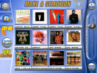
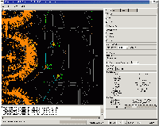
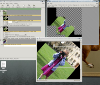

|
GTK+ Success Stories
GTK+, the development toolkit for the GNOME desktop and the GIMP image editor, is the choice of thousands of developers worldwide. Developers choose GTK+ for a variety of reasons, from the community that surrounds it to the free-of-charge LGPL licensing it offers. For many, the internationalization support seals the deal; for others, performance is the most important factor. Some prefer it because they program in C, and others because they program in C++, or Python, or C#. Regardless of the reasons, GTK+ is the finest Unix/Linux development toolkit worldwide. This page presents some of the developers who use GTK+ and the reasons they like it.

TouchTunes Digital Jukebox Embedded Systems: TouchTunes Music
TouchTunes Music Corporation sells over a thousand digital jukeboxes a year, each with a GTK+ interface and glib-driven internals. Developer Tristan Van Berkom writes that he prefers GTK+ because "I consider myself a perfectionist" and that, examining the source, he often says "I couldn't have done it better myself." Logistics: Solvo, Ltd.
Andrew Makeev, from Solvo, Ltd. of St. Petersburg, Russia, develops warehouse management systems using C++ and gtkmm. He cites several factors in his company's choice of GTK+ as a development toolkit, especially performance and internationalization. He appreciates the extensive documentation, direct access to the development community, and the straightforward object model.

RVP Server Radar Imaging and Graphics: Primagraphics
Richard Warren, a senior software engineer for Primagraphics, says GTK+ has let him ship products "on the customer's choice of platform, be it Linux, Solaris or even Windows, with a virtually identical application in each case and very little additional engineering effort on our part." He also has kind words for the Gtk+ community: "The quality of the libraries and the advice, responsiveness and direct access to the developers available through the mailing lists meant that we have never once regretted" choosing Gtk+ as a development platform. Bioinformatics: NorayBio
Miguel Pignatelli, a senior scientist at the Bilbao, Spain bioinformatics company NorayBio, uses GTK+ in the development of software that predicts protein folding patterns. Although they initially selected GTK+ because they were writing in C, the NorayBio developers have grown to appreciate the way that provides access to both high and low levels of graphical programming and inter-process communications.

Vasari Image Processing System Image Processing: National Gallery, London
The National Gallery uses GTK+ for its image-processing system, VIPS. VIPS is in use on Windows and Linux systems as part of the Vasari image archiving project, cataloging and storing extremely high resolution digital images of artwork for museums worldwide. Developer John Cupitt says that the Gallery's reasons for choosing GTK+ were portability, support, and appearance. End-user Applications: SendOutCards
Developers at SendOutCards.com use GTK+ and gtkmm to develop internal applications that allow end users to perform specialized technical tasks easily. Developer Adam Olsen says he selected GTK+ for its licensing and its cross-platform portability. Additional features he appreciates are the ease of development: with libglade, he says, "I really like that I can tweak the interface without having to recompile." Audio: Linux Audio Systems
Linux Audio Systems, a small music and pro-audio software company, uses GTK+ for all of its GUI-based software. Linux Audio Systems programs in C++, and was attracted by the way that the gtkmm wrappers use standard C++ and the Standard Template Library. They also appreciate the availability of a model/view/controller structure in GTK+. The canvas, in particular, has been crucial in their work, and has been extended for the main GUI object in the Ardour digital audio workstation. Developer Paul Davis says "the ease of new widget creation with gtkmm and the simplicity of creating new Canvas items have been highlights for us." In addition, "the presence of a very helpful and knowledgeable user community on the GTK+ mailing lists has been another very useful 'feature' of the toolkit for us." Finally, GTK+ offered a better cost structure: the choice of the LGPL means that Linux Audio Systems has no licensing fees to pay for the toolkit. Embedded Systems: EPIC Technology
Roger Leigh, a developer at the UK company EPIC Technology, uses GTK+ and gtkmm to develop point of sale systems. He says "I had no problem persuading my boss to use it, since so many high quality applications have been written with it." Leigh particularly appreciates the GObject object system, the separation of functionality into distinct libraries, the emphasis on standards, and the integration with the C++ Standard Library. GUI design in GTK+ is excellent, he says: "I tried out Java/Swing a while back, and it didn't even come close to GTK+ in terms of ease of interface design using Glade." Academic Research: University of Ljubljana
Andrej Prsa, research scientist in the Physics department at the University of Ljubljana, is using GTK+ in his work on eclipse patterns in binary star systems. He chose GTK+ for its licensing and because of the ubiquity of Linux software in astrophysics. Industry: BMA Coal, Australia
Kim Adil, at BMA Coal in Australia, used Gtk+ to build a cross-platform mining process visualization tool for the mine control room. Developed on Linux and deployed on Windows 2000, the application displays near-real-time equipment location and status for the mine's heavy equipment. It has been so successful that it runs not only in the control room, but on a plasma display at the entrance to the BMA office. BMA Coal selected Gtk+ for its licensing, cross-platform ability, and range of features. Adil, a mechanical engineer by with little previous software development experience, says "cross platform stability has been quite astounding," and that the Gtk+ community and mailing lists were significant factors in the project's success. |
{kind=link}
{kind=link}
{kind=link}